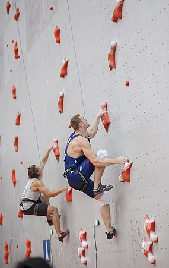

Speed climbing is a climbing discipline in which speed is the ultimate goal. Speed climbing is done on rocks, walls and poles and is only recommended for highly skilled and experienced climbers.
Competition speed climbing, which takes place on an artificial and standardized climbing wall, is the main form of speed climbing. However, there are types of speed climbing that take place outdoors, such as climbing famous big wall climbing routes in the shortest times, notable examples being on El Capitan in Yosemite National Park.